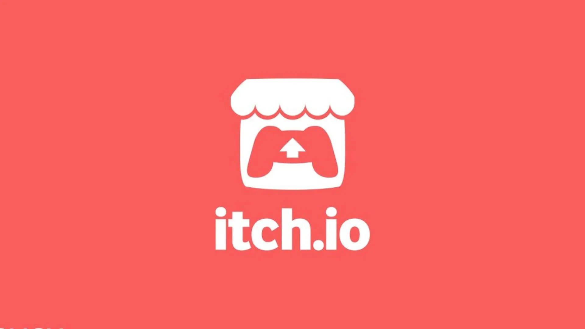

What does freelancing actually mean?
When most people think about game development, they usually imagine working for a large company such as Bethesda, Rockstar Games or Ubisoft but, not every developer follows that simple path since many people choose to work independently as freelancers or create their own games through small studios. Freelancing is when someone works for themselves rather than being employed by a single company and they may take on projects for clients, contribute to games being developed by other studios or create their own products and attempt to sell them directly to players and as a Games Development student, I find freelancing interesting because it offers a very different career path compared to working at a large studio.
Looking at Bethesda
When I think about AAA development, Bethesda is one of the first studios that comes to my mind with such games like Fallout 3, Fallout 4 and Skyrim required hundreds of people working together across many different disciplines and these projects involve programmers, artists, designers, writers, animators, sound engineers and testers all contributing towards a single game. Working in this environment provides stability because employees typically receive a regular salary, access to resources and the support of a larger team and that there is also the opportunity to work on major franchises that reach millions of players around the world.
The appeal of freelancing
While working for a company such as Bethesda sounds appealing, freelancing has advantages too with one of the biggest benefits is creative freedom since a freelancer has much more control over what they create, who they work with and how they manage their time. They are not limited to a company's existing projects and can pursue ideas that genuinely interest them and as a Fallout fan, I often look at some of the large modding projects created by the community and wonder what would happen if those creators built their own commercial games with such projects like Fallout London demonstrate the amount of talent that exists within gaming communities and show how independent creators can produce work that attracts significant attention.

Itch.io logo © Itch.io.
The business side of freelancing
While freelancing offers creative freedom, it also comes with significant responsibility since many developers begin as what's called a Sole Trader, which means they are personally responsible for any business debts or financial issues and unlike working for a studio such as Bethesda, there is no guaranteed income and no large company providing support but for developers in Scotland, organisations such as Creative Scotland, Business Gateway and the UK Games Fund can provide support, funding opportunities and advice for people looking to build independent careers in the games industry.
The challenges of freelancing
Of course, freelancing is not as simple as working whenever you want and making games all day and one of the biggest challenges is financial uncertainty since someone working at Bethesda knows they will receive a salary each month. A freelancer has no such guarantee. They need to find clients, manage their finances and maintain a positive reputation if they want work to continue coming in but with freelancers, they are also responsible for promoting themselves, communicating with clients and managing deadlines. This means that professionalism becomes extremely important since a freelancer who repeatedly misses deadlines or communicates poorly may quickly struggle to find future work.
Why reputation matters
Something I have noticed while researching this topic is that reputation plays a huge role in both freelancing and traditional employment and Bethesda has spent years building its reputation through games such as Fallout and The Elder Scrolls. Even when projects such as Fallout 76 faced criticism, the company continued supporting them because maintaining trust with players was important. Freelancers must take a similar approach since without a good reputation, finding future clients becomes much more difficult. Delivering quality work, communicating clearly and behaving professionally are all essential if someone wants to succeed independently.
How would I promote myself?
If I decided to pursue freelancing in the future, I would focus heavily on building an online presence and having professional portfolio website would be my starting point because it allows potential clients to view examples of my work but I would also use GitHub to showcase programming projects and LinkedIn to build connections with industry professionals and by having completed projects is often far more effective than simply listing skills on a CV because it provides evidence of what I am capable of creating.
Does freelancing appeal to me?
Honestly, I'm not completely sure since the idea of having creative freedom and working on projects that genuinely interest me is attractive but, the financial uncertainty would definitely be something to consider and at the moment, I think I would prefer gaining experience within a larger studio environment before considering freelancing later in my career. Working for a company such as Bethesda would provide opportunities to learn from experienced developers, understand how large projects are managed and develop professional skills that could later be useful if I decided to work independently.
My conclusion
I don't think freelancing is the only road to success in the creative industries, but I do think it is a valid option for many developers since both freelancing and studio employment have advantages and disadvantages with freelancing offers freedom and flexibility, while large studios such as Bethesda provide stability, resources and opportunities to work on major projects, but personally for me, the most important lesson is that success depends less on the path chosen and more on the professionalism, skills and reputation that a developer builds along the way.